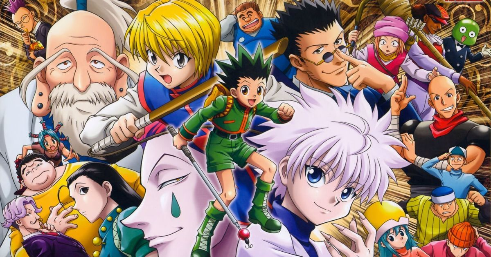

Hunter X Hunter é uma obra de Yoshihiro Togashi, não tão conhecida quanto seu maior sucesso, Yu Yu Hakusho. Aqui, o tema envolve novamente batalhas e poderes vindo de conceitos espirituais, mas de uma forma nunca antes abordada em um mangá e anime.
O mangá foi lançado originalmente em 1998 e ainda aguarda uma conclusão por parte de Togashi, que já colocou diversos hiatos na história. Adaptações em anime aconteceram em 1999 e em 2011.
A história tem como protagonista o jovem Gon Freecs, que tenta seguir a trilha de seu pai desaparecido, Ging, para se tornar um Hunter, um indivíduo certificado e com habilidades fora do comum para caçar tesouros, animais raros e qualquer tipo de recompensa em um mundo onde esse tipo de coisa é abundante.
Tudo começa com Gon fazendo o exame para conseguir sua Licença Hunter. É durante essa prova que ele conhecerá seus melhores amigos e aliados, bem como alguns de seus rivais mais poderosos. Assim destacando os protagonistas: Gon, Killua, Kurapika, Leorio e Hisoka
A trama é recheada de enigmas e situações inusitadas, onde a inteligência dos personagens também é colocada à prova, bem como suas habilidades.
